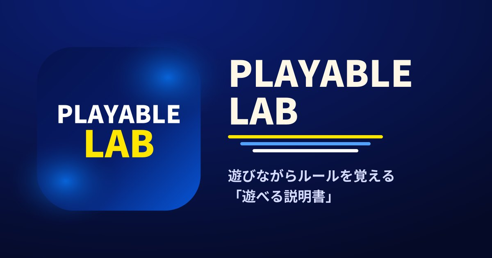
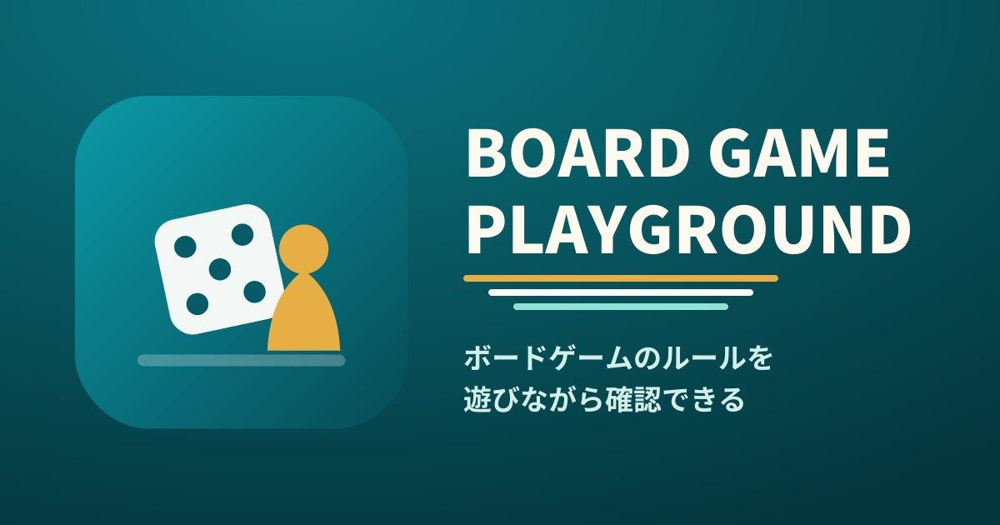

試作ゲームラボ
ブラウザですぐ遊べる試作ゲームの置き場です。スマホでもそのまま遊べます。
関連コンテンツへ ↓
🎵 公式テーマソング
「
試作ゲームラボ
」
KUMA MUSIC
🎬 MV
🎵 テーマソング
関連コンテンツ
kuma-music.onrender.com
KUMA MUSIC 公式サイト
ボードゲーム×AI音楽。「好き」を曲にする

stack-lab-uayz.onrender.com
PLAYABLE LAB
遊びながらルールを覚える「遊べる説明書」

boardgame-tutorial.onrender.com
BOARD GAME PLAYGROUND
既存ボードゲームのルール確認・デジタル再現
kuma-jukebox.onrender.com
KUMA MUSIC JUKEBOX
KUMA MUSICの曲をボタンひとつで聴けるジュークボックス
 試作ゲームラボ
試作ゲームラボ